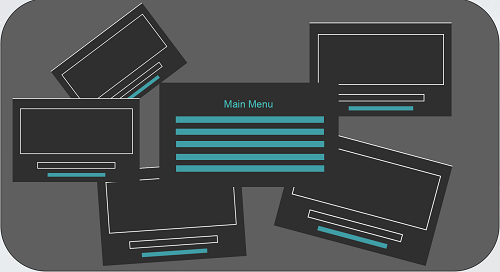

Project CV meets Art
PPT:
Filter.pptx
Poster:

Source Code
# -*- coding: utf-8 -*-
from tkinter import *
import tkinter
from tkinter.filedialog import *
import tkinter.constants
import numpy as np
import cv2
from PIL import Image, ImageTk
import matplotlib.pyplot as plt
class GUI:
def __init__(self):
self.root = Tk()
self.root.title("FILTER")
self.root.configure(bg='#000000')
self.root.geometry('400x300')
GUI.locate(self.root)
self.root.wm_attributes("-topmost", 1)
self.a = 'asdsads'
"""canvas = tkinter.Canvas(self.root,width=700,height=600,bg='#000000')
image = Image.open("bei.jpg")
im = ImageTk.PhotoImage(image)
canvas.create_image(360,300,image = im)
canvas.pack()"""
Label(self.root, text='Main Menu', bg='#000000',fg='#7FFFD4',font=('Yu Gothic UI Semibold', 27)).pack(side=TOP,pady=7.3)
Button(self.root, text='HSV Adjustment',bg='#000000',activebackground='#7FFFD4',fg='#7FFFD4',relief='groove',font=('Arial', 18), command=lambda: self.adjustHSV()).pack(side=TOP,fill='x',pady=1.2)
Button(self.root, text='Image Gradient', bg='#000000',activebackground='#7FFFD4',fg='#7FFFD4',relief='groove',font=('Arial', 18), command=lambda: self.imagegradients()).pack(side=TOP,fill='x',pady=1.2)
Button(self.root, text='Threshold',bg='#000000',activebackground='#7FFFD4',fg='#7FFFD4',relief='groove',font=('Arial', 18), command=lambda: self.threshold()).pack(side=TOP,fill='x',pady=1.2)
Button(self.root, text='Canny Edge Detection',bg='#000000', activebackground='#7FFFD4',fg='#7FFFD4',relief='groove',font=('Arial', 18), command=lambda: self.cannyedge()).pack(side=TOP,fill='x',pady=1.2)
Button(self.root, text='Image Smoothing',bg='#000000',activebackground='#7FFFD4',fg='#7FFFD4',relief='groove',font=('Arial', 18), command=lambda: self.smooth()).pack(side=TOP,fill='x',pady=1.2)
self.root.mainloop()
def adjustHSV(self):
self.root.withdraw()
root = Toplevel(self.root)
root.wm_attributes("-topmost", 1)
root.withdraw()
root.configure(bg='#000000')
root.title("HSV Adjustment")
root.protocol("WM_DELETE_WINDOW", lambda: self.showMain(root))
self.canvas = Canvas(root, width=600, height=450, bg='#000000')
self.canvas.pack()
Button(root, text='Open Picture',relief='groove',bg='#000000',activebackground='#7FFFD4',fg='#7FFFD4',font=('Arial', 10),command=lambda: self.file(root, 600, 450, action, 1)).pack(pady=5.0)
dH = StringVar()
dS = StringVar()
dV = StringVar()
dH.set(0)
dS.set(0)
dV.set(0)
hS = Scale(root, bg='#000000',fg='#7FFFD4',font=('Arial', 13),
variable=dH, from_= 0, to=255, resolution=1, orient=HORIZONTAL, length=400)
hS.bind('<ButtonRelease-1>', lambda e: action.invoke())
hS.pack()
sS = Scale(root, bg='#000000',fg='#7FFFD4',font=('Arial', 13), variable=dS, from_= 0, to=255, resolution=1, orient=HORIZONTAL, length=400)
sS.bind('<ButtonRelease-1>', lambda e: action.invoke())
sS.pack()
vS = Scale(root, bg='#000000',fg='#7FFFD4',font=('Arial', 13), variable=dV, from_= 0, to=255, resolution=1, orient=HORIZONTAL, length=400)
vS.bind('<ButtonRelease-1>', lambda e: action.invoke())
vS.pack()
action = Button(root, text='Adjust',relief='groove', bg='#000000',activebackground='#7FFFD4',fg='#7FFFD4', font=('Arial', 15), state=DISABLED, command=lambda: Filters.showHSMImg((self.h+int(dH.get()), self.s+int(dS.get()), self.v+int(dV.get()))))
action.pack(pady=5.0)
GUI.locate(root)
root.mainloop()
def imagegradients(self):
self.root.withdraw()
root = Toplevel(self.root)
root.wm_attributes("-topmost", 1)
root.withdraw()
root.configure(bg='#000000')
root.title("Image Gradient")
root.protocol("WM_DELETE_WINDOW", lambda: self.showMain(root))
self.canvas = Canvas(root, width=600, height=450, bg='#000000')
self.canvas.pack()
Button(root, text='Open Picture', relief='groove',bg='#000000',activebackground='#7FFFD4',fg='#7FFFD4',font=('Arial', 10),command=lambda: self.file(root, 600, 450, action)).pack(pady=5.0)
action = Button(root, text='ImgGradient', activebackground='#7FFFD4',bg='#000000',fg='#7FFFD4',relief='groove',font=('Arial', 15),command=lambda: Filters.imagegradients(self.img),
state=DISABLED)
action.pack(pady=5.0)
GUI.locate(root)
root.mainloop()
def threshold(self):
self.root.withdraw()
root = Toplevel(self.root)
root.wm_attributes("-topmost", 1)
root.withdraw()
root.configure(bg='#000000')
root.title("Threshold")
root.protocol("WM_DELETE_WINDOW", lambda: self.showMain(root))
self.canvas = Canvas(root, width=600, height=450, bg='#000000')
self.canvas.pack()
Button(root, text='Open Picture',relief='groove',bg='#000000',activebackground='#7FFFD4',fg='#7FFFD4',font=('Arial', 10), command=lambda: self.file(root, 600, 450, action)).pack(pady=5.0)
x = StringVar()
y = StringVar()
Entry(root, textvariable=x,bg='#000000',font=('Arial', 15), fg='#7FFFD4').pack()
Entry(root, textvariable=y,bg='#000000',font=('Arial', 15), fg='#7FFFD4').pack()
x.set(127)
y.set(255)
action = Button(root, text='Threshold',relief='groove', bg='#000000',activebackground='#7FFFD4',fg='#7FFFD4',font=('Arial', 15),command=lambda: Filters.thresholded(self.img, int(x.get()), int(y.get())),
state=DISABLED)
action.pack(pady=5.0)
GUI.locate(root)
root.mainloop()
def cannyedge(self):
self.root.withdraw()
root = Toplevel(self.root)
root.wm_attributes("-topmost", 1)
root.withdraw()
root.configure(bg='#000000')
root.title("Canny Edge Detection")
root.protocol("WM_DELETE_WINDOW", lambda: self.showMain(root))
self.canvas = Canvas(root, width=600, height=450, bg='#000000')
self.canvas.pack()
Button(root, text='Open Picture', relief='groove',bg='#000000',activebackground='#7FFFD4',fg='#7FFFD4',font=('Arial', 10),command=lambda: self.file(root, 600, 450, action)).pack(pady=5.0)
x = StringVar()
y = StringVar()
Entry(root, textvariable=x,font=('Arial', 15), bg='#000000',fg='#7FFFD4').pack()
Entry(root, textvariable=y,font=('Arial', 15), bg='#000000',fg='#7FFFD4').pack()
x.set(127)
y.set(150)
action = Button(root, text='Detect Edges', bg='#000000',activebackground='#7FFFD4',fg='#7FFFD4',font=('Arial', 15),relief='groove',command=lambda: Filters.cannyedgedetection(self.img, int(x.get()), int(y.get())),
state=DISABLED)
action.pack(pady=5.0)
GUI.locate(root)
root.mainloop()
def smooth(self):
self.root.withdraw()
root = Toplevel(self.root)
root.wm_attributes("-topmost", 1)
root.withdraw()
root.configure(bg='#000000')
root.title("Image Smoothing")
root.protocol("WM_DELETE_WINDOW", lambda: self.showMain(root))
self.canvas = Canvas(root, width=600, height=450, bg='#000000')
self.canvas.pack()
Button(root, text='Open Picture',relief='groove', bg='#000000',activebackground='#7FFFD4',fg='#7FFFD4',font=('Arial', 10),command=lambda: self.file(root, 600, 450, action)).pack(pady=5.0)
x = StringVar()
y = StringVar()
Entry(root, textvariable=x,font=('Arial', 15), bg='#000000',fg='#7FFFD4').pack()
Entry(root, textvariable=y,font=('Arial', 15), bg='#000000',fg='#7FFFD4').pack()
x.set(5)
y.set(5)
action = Button(root, text='Smooth', bg='#000000',activebackground='#7FFFD4',fg='#7FFFD4',relief='groove',font=('Arial', 15),command=lambda: Filters.smoothimages(self.img, int(x.get()), int(y.get())),
state=DISABLED)
action.pack(pady=5.0)
GUI.locate(root)
root.mainloop()
def file(self, root, maxW, maxH, button=None, var=None):
dirf = askopenfilename(title='Open a picture',
filetypes=[('Picture', 'gif'), ('Picture', 'png'), ('Picture', 'jpg')])
#dir = dir.encode('utf-8').decode('gbk')
if dir is not None:
try:
#self.img = cv2.imread(dir.encode('gbk'))
self.img = cv2.imdecode(np.fromfile(dirf, dtype=np.uint8), -1)
height, width = self.img.shape[0], self.img.shape[1]
except:
return
if width > maxW:
r = width / maxW
width = maxW
height /= r
if height > maxH:
r = height / maxH
height = maxH
width /= r
width, height = int(width), int(height)
# root.geometry(str(width) + "x" + str(height + 100))
image = Image.open(dirf)
image = image.resize((width, height), Image.ANTIALIAS)
im = ImageTk.PhotoImage(image)
self.canvas['width'] = width + 2
self.canvas['height'] = height + 2
self.canvas.create_image(width // 2+1, height // 2+1, image=im)
self.flag = True
if button is not None:
button['state'] = NORMAL
if var is not None:
self.h, self.s, self.v = Filters.getHSV(self.img)
while self.flag:
self.canvas.update()
def hide(self):
self.root.withdraw()
def showMain(self, root):
root.quit()
root.destroy()
self.flag = False
self.root.update()
self.root.deiconify()
# relocate the window such that it appears on the center of the screen
@staticmethod
def locate(root):
root.withdraw() # hide window
screen_width = root.winfo_screenwidth()
screen_height = root.winfo_screenheight() - 100 # under windows, taskbar may lie under the screen
root.resizable(False, False)
root.update_idletasks()
root.deiconify() # now window size was calculated
root.withdraw() # hide window again
root.geometry('%sx%s+%s+%s' % (
root.winfo_width() + 10, root.winfo_height() + 10, (screen_width - root.winfo_width()) // 2,
(screen_height - root.winfo_height()) // 2)) # center window on desktop
root.deiconify()
class Filters:
@staticmethod
def imagegradients(img):
img = Filters.bgr2rgb(img)
laplacian = cv2.Laplacian(img, cv2.CV_64F)
sobelx = cv2.Sobel(img, cv2.CV_64F, 1, 0, ksize=5)
sobely = cv2.Sobel(img, cv2.CV_64F, 0, 1, ksize=5)
plt.title('Image Gradient')
plt.subplot(2,2,1),plt.imshow(img,cmap = 'gray')
plt.title('Original'), plt.xticks([]), plt.yticks([])
plt.subplot(2, 2, 2), plt.imshow(laplacian, cmap='gray')
plt.title('Laplacian'), plt.xticks([]), plt.yticks([])
plt.subplot(2, 2, 3), plt.imshow(sobelx, cmap='gray')
plt.title('Sobel X'), plt.xticks([]), plt.yticks([])
plt.subplot(2, 2, 4), plt.imshow(sobely, cmap='gray')
plt.title('Sobel Y'), plt.xticks([]), plt.yticks([])
plt.show()
@staticmethod
def thresholded(img, x, y):
# x,y are the lower and upper limits of color which should in the range(0,255)
ret, thresh1 = cv2.threshold(img, x, y, cv2.THRESH_BINARY)
ret, thresh2 = cv2.threshold(img, x, y, cv2.THRESH_BINARY_INV)
ret, thresh3 = cv2.threshold(img, x, y, cv2.THRESH_TRUNC)
ret, thresh4 = cv2.threshold(img, x, y, cv2.THRESH_TOZERO)
ret, thresh5 = cv2.threshold(img, x, y, cv2.THRESH_TOZERO_INV)
titles = ['Original Image', 'BINARY', 'BINARY_INV', 'TRUNC', 'TOZERO', 'TOZERO_INV']
images = [img, thresh1, thresh2, thresh3, thresh4, thresh5]
plt.title('Image Threshold')
for i in range(6):
plt.subplot(2, 3, i + 1), plt.imshow(Filters.bgr2rgb(images[i]), 'gray')
plt.title(titles[i])
plt.xticks([]), plt.yticks([])
plt.show()
@staticmethod
def smoothimages(img, x, y):
# x*y is the area that is going to be smoothed
kernel = np.ones((x, y), np.float32) / (x * y)
dst = cv2.filter2D(img, -1, kernel)
dst = Filters.bgr2rgb(dst)
# plt.subplot(121), plt.imshow(img), plt.title('Original')
# plt.xticks([]), plt.yticks([])
# plt.subplot(122), plt.imshow(dst), plt.title('Averaging')
# plt.xticks([]), plt.yticks([])
plt.title('Smoothing Result')
plt.imshow(dst)
plt.show()
@staticmethod
def cannyedgedetection(img, x, y):
# x and y each are one of the two edges
edges = cv2.Canny(img, x, y)
# img = Filters.bgr2rgb(img)
# plt.subplot(121), plt.imshow(img, cmap='gray')
# plt.title('Original Image'), plt.xticks([]), plt.yticks([])
# plt.subplot(122), plt.imshow(edges, cmap='gray')
# plt.title('Edge Image'), plt.xticks([]), plt.yticks([])
plt.imshow(edges, cmap='gray')
plt.title('Edge Detection Result')
plt.show()
@staticmethod
def getHSV(img):
return cv2.split(cv2.cvtColor(img, cv2.COLOR_BGR2HSV))
@staticmethod
def showHSMImg(hsv):
img_hsv = cv2.merge(hsv)
img = cv2.cvtColor(img_hsv, cv2.COLOR_HSV2BGR)
img = Filters.bgr2rgb(img)
plt.imshow(img)
plt.title('Adjustment Result')
plt.show()
@staticmethod
def bgr2rgb(img):
b, g, r = cv2.split(img)
return cv2.merge((r, g, b))
gui = GUI()